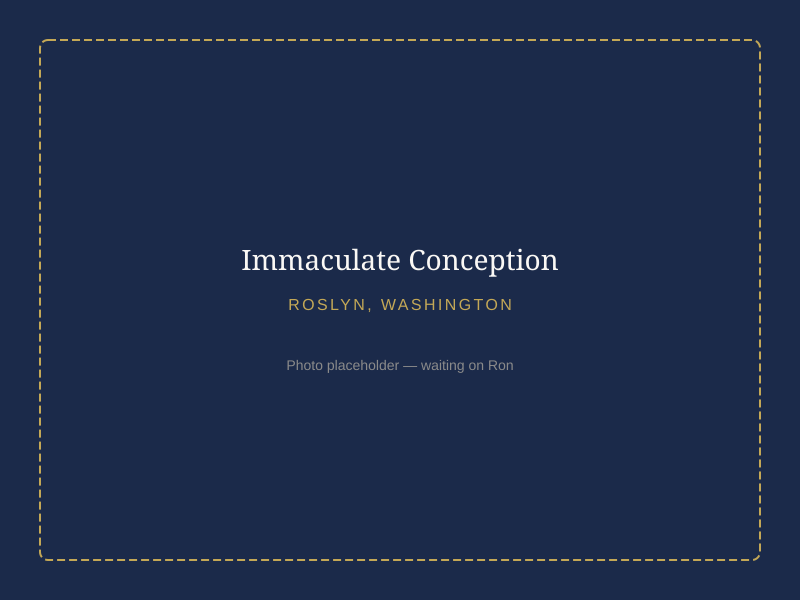

Los sacramentos
Bautismo, Confirmación, Matrimonio y la misericordia de la Reconciliación.
Sacramentos →
La más antigua de nuestras dos parroquias, establecida en 1887 y una de las primeras de la Diócesis de Yakima. Lleva el nombre de la Madre de Dios, que vela por este rincón del valle.

Todas nuestras Misas se celebran actualmente en inglés. Muchas familias hispanohablantes forman parte de nuestra comunidad, y el Padre Higuera habla español, así que no dude en acercarse a él antes o después de la Misa.
Roslyn se fundó en 1886 como pueblo minero de una compañía carbonera, y sus familias católicas estuvieron entre los primeros pobladores. La parroquia se estableció en 1887 y es una de las más antiguas de la Diócesis de Yakima; la iglesia se terminó en octubre de 1888. La iglesia y la casa parroquial de La Inmaculada Concepción forman parte del Roslyn Historic District, inscrito en el Registro Nacional de Lugares Históricos en 1978.
Tras sufrir graves daños en el terremoto de Nisqually de 2001, la iglesia fue restaurada con esmero. En 2025, bajo la guía del Padre Higuera, la parroquia completó una restauración histórica de gran alcance: renovó el yeso, la pintura decorativa, las obras de arte originales, la carpintería y la iluminación, y reabrió la iglesia a tiempo para la Navidad, preservando la herencia católica e inmigrante de Roslyn para la próxima generación.
Leer la historia completa →La Inmaculada Concepción es la fe católica de que María, la madre de Jesús, fue concebida sin la mancha del pecado original desde el primer instante de su existencia. Dios la preparó, de antemano, para ser la madre de su Hijo.
Ella es la mujer que dijo sí al ángel, la que estuvo junto a Jesús en la cruz y la que fue entregada a todos los cristianos como madre nuestra. Su monograma, una M entrelazada y coronada con doce estrellas, es la tercera figura de nuestro escudo. Su fiesta es el 8 de diciembre.
Bautismo, Confirmación, Matrimonio y la misericordia de la Reconciliación.
Sacramentos →Educación religiosa para niños, OCIA y FORMED.
Más información →Acompáñenos en línea cada domingo desde casa.
Ver en vivo →La Inmaculada Concepción sirve a Roslyn desde 1887 y ha sobrevivido al fuego, al terremoto y al cierre de las minas. La restauración de 2025 renovó lo que construyeron generaciones enteras. Su generosidad la mantiene en pie para la próxima.
Donar a La Inmaculada Concepción